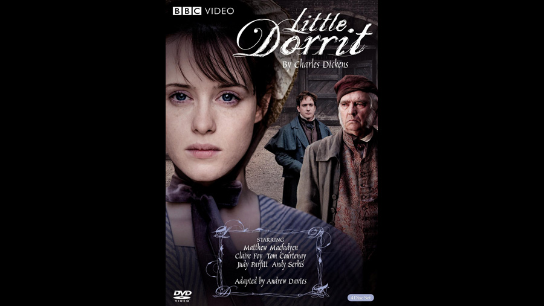

| Character | Actor |
|---|---|
| William Dorrit | Tom Courtenay |
| John Chivery | Russell Tovey |
| Amy Dorrit | Claire Foy |
| Mrs. Clenman | Judy Parfitt |
| Jeremiah / Ephraim Flintwinch | Alun Armstrong |
| Affery Flintwinch | Sue Johnston |
| Arthur Clenman | Matthew Macfadyen |
| Mr. Clennam (Arthur's late father) | Ian McElhinney |
| Mr. Meagles | Bill Paterson |
| Minnie "Pet" Meagles | Georgia King |
| Tattycoram | Freema Agyeman |
| Mrs. Meagles | Janine Duvitski |
| Rigaud / Blandois | Andy Serkis |
| Jean-Baptiste Cavalletto | Jason Thorpe |
| Mr. Chivery | Ron Cook |
| Waiter | Jonathan Slinger |
| Poyner | Amanda Lawrence |
| Edward "Tip" Dorrit | Arthur Darvill |
| Young Arthur | Laurence Belcher |
| Jailer | Daniel Rovai |
| Frederick Dorrit | James Fleet |
| Fanny Dorrit | Emma Pierson |
| Maggy, Little Dorrit's Protégée | Eve Myles |
| Mr. Plornish | Jason Watkins |
| Mrs. Plornish | Rosie Cavaliero |
| Pancks | Eddie Marsan |
| Mr. Casby | John Alderton |
| Slingo, horsedealer | Angus Barnett |
| Tite Barnacle | Robert Hardy |
| Tite Barnacle Jr. | Darren Boyd |
| Daniel Doyce | Zubin Varla |
| Landlady | Danielle Urbas |
| Fat Man | David Verrey |
| Flora Finching | Ruth Jones |
| Mr. F.'s Aunt | Annette Crosbie |
| Flower Girl | Bel Powley |
| Stagehand | Stuart McLaughlin |
| Edmund Sparkler | Sebastian Armesto |
| Henry Gowan | Alex Wyndham |
| Miss Wade | Maxine Peake |
| Theatre Director | Roy Hudd |
| Mrs. Merdle | Amanda Redman |
| Mr. Merdle | Anton Lesser |
| Mr. Merdle's Butler | Nicholas Jones |
| Lawyer | Nicholas Blane |
| Doctor | Geoffrey Whitehead |
| Henry Gowan's Mother | Harriet Walter |
| Mr. Rugg, Legal Advisor | Geoff McGivern |
| Anastasia Rugg | Imogen Bain |
| Landlord | Peter Hugo-Daly |
| Mrs. General | Pam Ferris |
| Father Laurent | Philip Desmeules |
| Major Domo | Vincent Riotta |
| Gondolier | Antonio Magro |
| Harris | Mackenzie Crook |
| Bank Porter | George Potts |
| Monsieur Henri | Stephane Cornicard |
| Cabby | Mark Kempner |
| Bath Attendant | Stephen Marcus |
| Marshalsea Doctor | Stuart Nurse |
| Role | Person |
|---|---|
| Director | Adam Smith Dearbhla Walsh Diarmuid Lawrence |
| Screenplay | Andrew Davies |
The series was filmed on location at Chenies Manor House (Mr. Meagles' House), Osterley Park (Venetian interiors), Luton Hoo (Bleeding Heart Yard, using sets originally designed for the 2005 production of Bleak House), Deal Castle in Kent, Hampton Court Palace in Surrey (the Marshalsea) and the Old Royal Naval College in Greenwich. Interiors were filmed at Pinewood Studios.